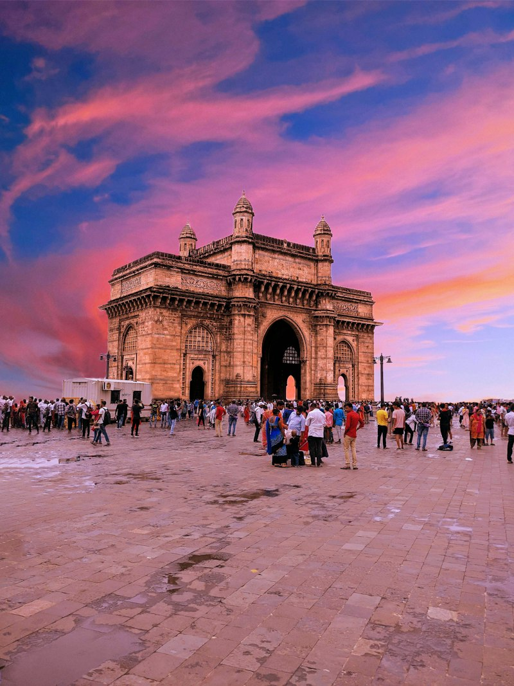

Personal Route Curation
Custom sacred itineraries tailored to your family's spiritual intention, preferred pacing, and dietary needs.
Intimate, reverent pilgrimage journeys for discerning families. Private scholar-guides, luxury ground logistics, and dignified sanctum access.

Custom sacred itineraries tailored to your family's spiritual intention, preferred pacing, and dietary needs.
Verified access permissions, certified local custodians, and quiet ceremonial access avoiding crowds.
Unhurried mornings, private boat charters for river aartis, luggage escorts, and step-free elder access.
 BUDDHIST & BON HERITAGE
BUDDHIST & BON HERITAGE
A meditative route connecting ancient cliffside gompas, private meditation sessions with senior Rinpoches, and scenic high-altitude Himalayan monasteries.
 HINDU TIRTHA & RIVER SANCTUM
HINDU TIRTHA & RIVER SANCTUM
Glide silently along the sacred Ganges aboard a private wooden bajra at dawn. Experience VIP darshans at Kashi Vishwanath and evening maha aartis with Vedic scholars.
 ABRAHAMIC & INTERFAITH HERITAGE
ABRAHAMIC & INTERFAITH HERITAGE
An unparalleled ecumenical exploration of Jerusalem’s Old City, Galilee, Mount of Beatitudes, and ancient desert hermitages with licensed archaeological scholars.
Pre-registered darshan slots, verified passes, and private ceremonial access avoiding crowds.
Accredited Indologists and cultural custodians providing historical and spiritual context.
Curated boutique havelis, historic royal estates, and peaceful monastic retreats.
Portable oxygen for high passes, motorized carts, and dedicated wheelchair assistance.
Share devotional goals, dietary wishes, pacing, and accessibility needs with your planner.
We coordinate inner-sanctum permits, ceremonial timings, and private ground logistics.
Introduction to accredited local faith historians and trusted private chauffeurs.
Private transfers, continuous medical contingency, and 24/7 dedicated concierge desk.
From a short three-day contemplative retreat to an extensive multi-week trans-regional circuit, start with a thoughtful conversation. SACRIDER shapes a verified itinerary proposal tailored to your family's exact vision.
Every sacred place deserves deep curiosity, unhurried care, and absolute reverence.
SACRIDER HOME 2 PHILOSOPHY